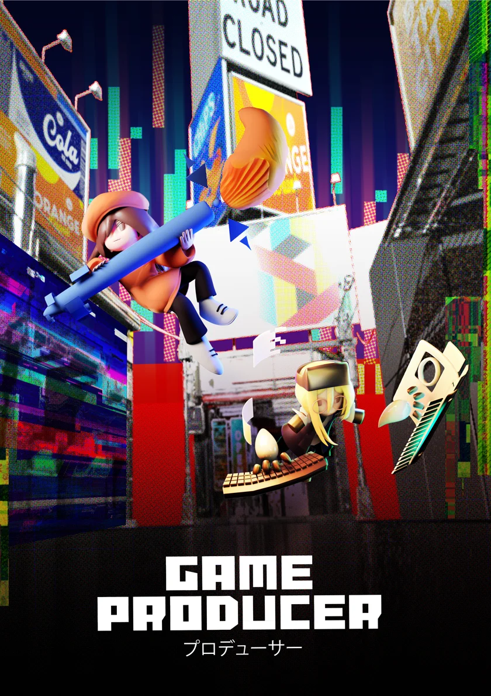

雙人合作動作解謎 · 2021.09–2022.06
Game Producer 2
結合繪圖生成與物件操控的雙人合作解謎。
兩名玩家分別操作美術與程式角色，運用繪圖生成 3D 物件及操控場景物件的能力，合作完成關卡。
負責項目程式開發與系統整合，包含角色能力、物件互動、雙人連線與同步。
2022 金點新秀設計獎入圍
- 組長
- 企劃＋3D 美術
- 主美
- 2D 美術
- 本人
- 程式
Unity／C# 遊戲程式開發
開發遊戲功能與玩家行為研究原型。
作品涵蓋雙人合作遊戲、RPG 戰鬥與 2D 平台控制器，負責遊戲程式、互動機制及行為紀錄輸出。

雙人合作動作解謎 · 2021.09–2022.06
結合繪圖生成與物件操控的雙人合作解謎。
兩名玩家分別操作美術與程式角色，運用繪圖生成 3D 物件及操控場景物件的能力，合作完成關卡。
負責項目程式開發與系統整合，包含角色能力、物件互動、雙人連線與同步。
2022 金點新秀設計獎入圍